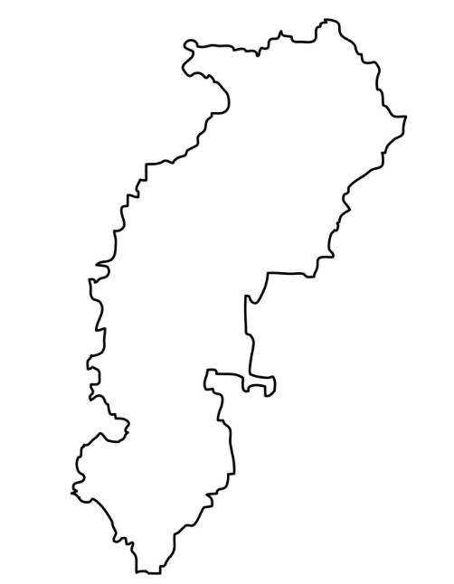
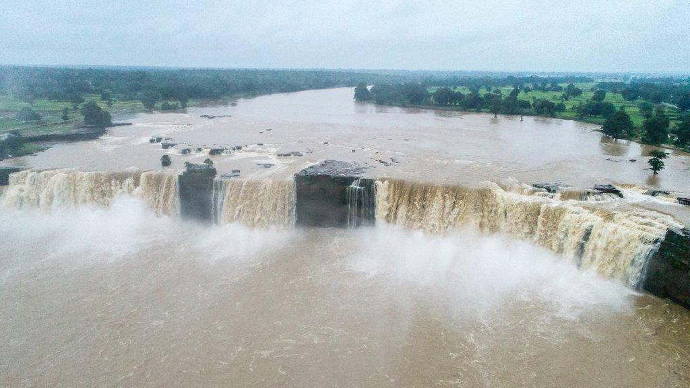
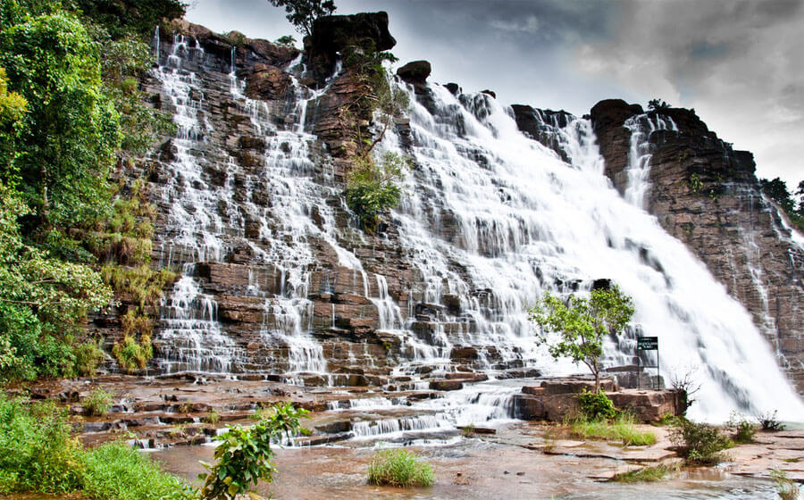
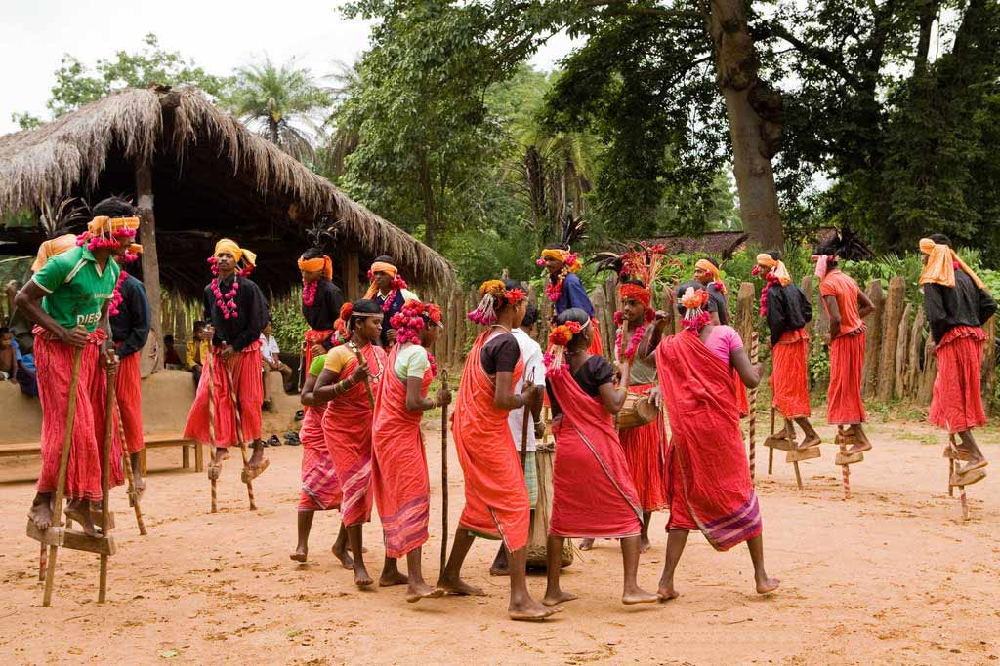
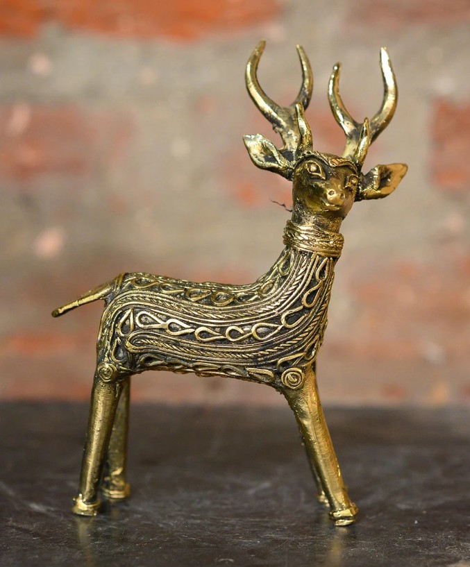
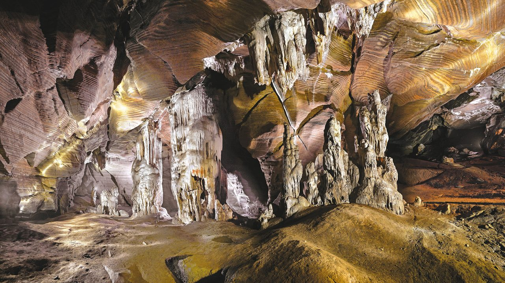
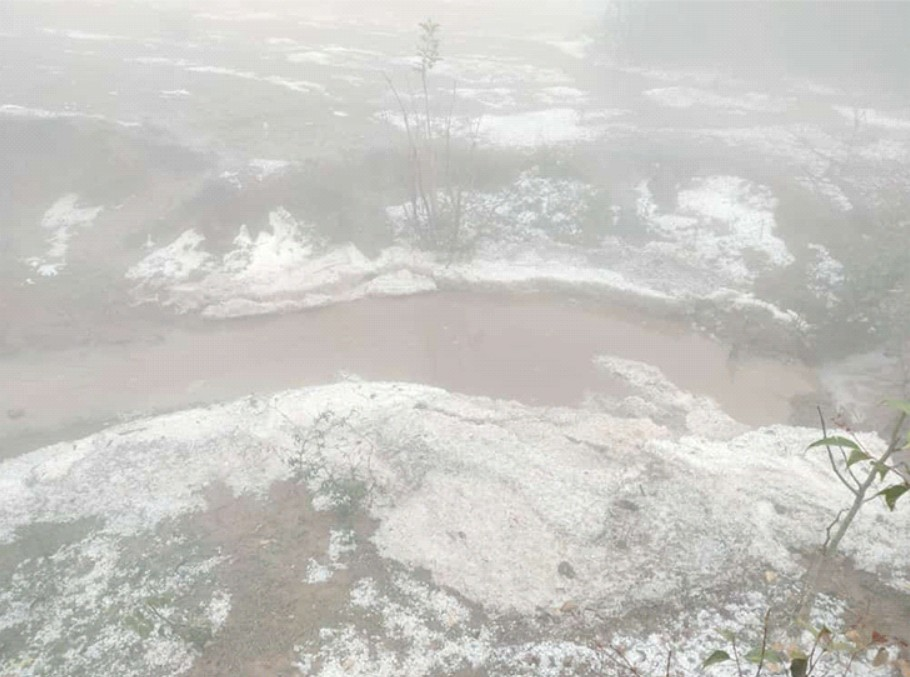

Welcome to My Blog
Welcome to my personal blog! This is a place where I share my thoughts, experiences, ideas and things that I find interesting.
Chhattisgarh Chronicles
Chhattisgarh is an underrated treasure of central India, known for its dense forests, roaring waterfalls, rich tribal heritage, and ancient temples.

The Waterfalls
Chitrakote Waterfalls (Bastar)
Often called the "Niagara of India," this is India's widest horse-shoe waterfall, stretching about 1,000 feet wide on the Indravati River.

Visual Spectacle: The waterfall displays at least three to seven streams during low-flow seasons, expanding into a single massive sheet during the rains. The water appears reddish during the monsoon due to silt and milky white during winter.
Activities: Visitors can enjoy boat rides near the base of the falls to experience the mist and view nearby Shiva shrines and natural grottoes.
Optimal Timing: The best time to visit is from July to October when the flow is at its peak, though the winter months offer pleasant weather and clearer water.
Tirathgarh Waterfalls (Kanger Valley National Park)
A stunning 300-foot cascading multi-tier waterfall often referred to as the "Milky Falls".

Visual Spectacle: A ~300 ft multi-tiered cascade on the Mugabahar River, transforms with the seasons — a thundering white sheet in monsoon, crystal-clear ribbons at full 160 m width in post-monsoon.
Activities: Popular activities include a dip in the base pool (avoid during monsoon), trekking and birdwatching in the park, photography (best light 8:30–11:30 AM), and combining the visit with nearby Kotumsar Caves and Kailash Gufa.
Optimal Timing: he best time to visit is October to February for full flow, pleasant weather, and safe descent; avoid July–September for the 210-step climb due to slippery, dangerous conditions.
Tribal Culture & Craftsmanship
Bastar Region
Home to around 40 distinct tribal communities (including Gond, Maria, Muriya, and Dhruva).

Local Markets & Art
Famous for weekly Haat markets, Dokra bell-metal craft, traditional wood carvings, and Kosa silk weaving in places like Kondagaon.

Festivals
The vibrant and historic Bastar Dussehra and traditional dances like the Geri stilt dance.
Nature & Wildlife
Barnawapara Wildlife Sanctuary
A lush forest sanctuary near Raipur featuring leopards, sloth bears, wild dogs, and bison.
Kanger Valley National Park & Kutumsar Caves
Underground limestone caves with stalagmites and rare blind cavefish.

Mainpat
Often called the "Shimla of Surguja," famous for its rolling green hills, waterfalls, and a prominent Tibetan settlement.

Ulta Pani, is the place on this hill which is a gravity hill where due to the optical illusion the water seems to defy the gravity and seems to flow from bottom to uphill.
History & Architecture
Sirpur
An ancient archaeological and Buddhist-Hindu site featuring the 7th-century brick-built Laxman Temple and the multi-colored Shivlingas of Surang Tila.
Rajim & Bhoramdeo
Known as the "Town of Temples" and the "Khajuraho of Chhattisgarh" respectively.
About Me
Hello Everyone! I am Gaurav Joshi, the person behind this blog. I enjoy learning new things, travelling and sharing experiences & interesting ideas with others.
This website was created using HTML.
Contact
Name : Gaurav Joshi
Roll No. : LCI2026051
Mob No. : 7415615477
Email. : gaurav.joshi0771@gmail.com